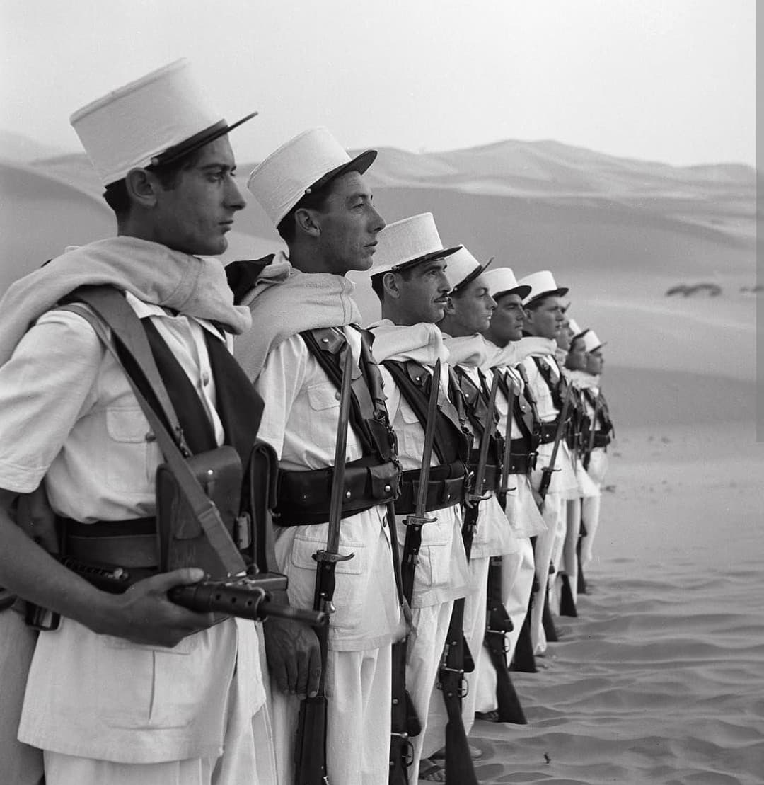
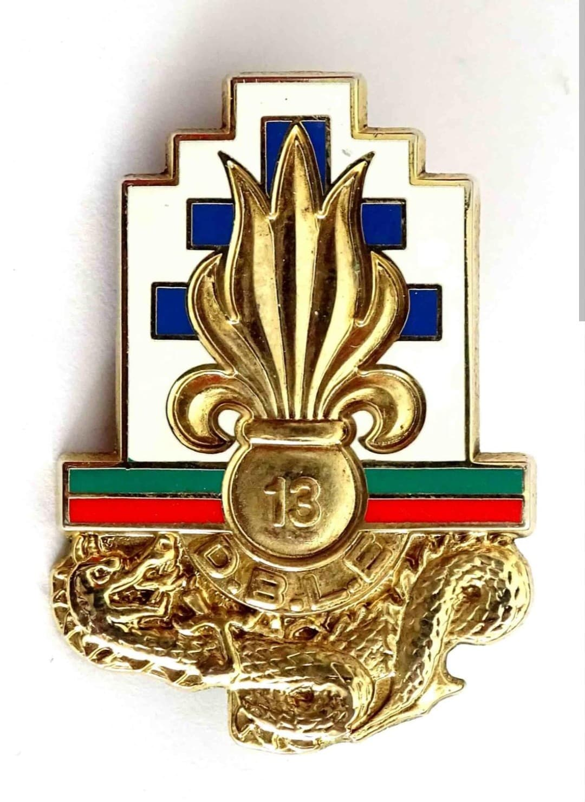
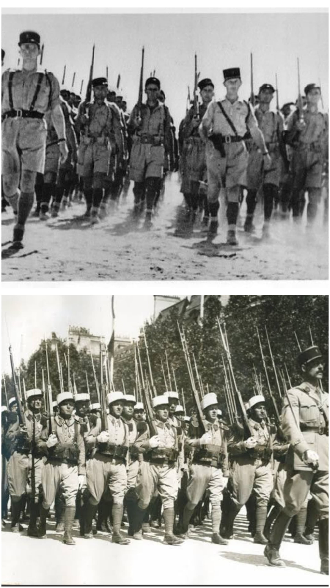

De la première victoire à Narvik à la résistance héroïque de Bir Hakeim et la Libération de l'Europe

Créée au début de l'année 1940 pour répondre aux urgences du conflit, la 13e Demi-Brigade de Légion Étrangère (13e DBLE) est l'une des unités militaires les plus prestigieuses et les plus décorées des Forces Françaises Libres (FFL).
Composée de volontaires venus du monde entier — dont de nombreux réfugiés antinazis espagnols, allemands et autrichiens —, la 13e DBLE a choisi le camp de la liberté dès l'été 1940, écrivant certaines des plus glorieuses pages de la Seconde Guerre mondiale.
Constituée en février 1940 en Afrique du Nord, l'unité est initialement destinée au corps expéditionnaire de Norvège. À la suite de la débâcle de juin 1940 et de l'Appel du 18 juin, une grande partie de la demi-brigade, menée par le capitaine Dmitri Amilakvari et le lieutenant-colonel Magrin-Vernerey (Monclar), rallie le général de Gaulle à Londres.
Son insigne rassemble les symboles indissociables de son histoire : la traditionnelle **grenade à sept flammes** de la Légion étrangère surmontée de la **Croix de Lorraine**, marquant son engagement indéfectible au sein de la France Libre.

En mai 1940, la 13e DBLE remporte la **bataille de Narvik** en Norvège face aux troupes de montagne allemandes, offrant aux Alliés leur première victoire terrestre majeure de la guerre.
Du 26 mai au 11 juin 1942, intégrée à la 1re Brigade Française Libre du général Kœnig, la demi-brigade s'illustre dans le désert libyen lors de la mythique **bataille de Bir Hakeim**. Pendant 16 jours, les légionnaires résistent stoïquement face aux assauts blindés de l'Afrika Korps du maréchal Rommel, freinant l'avancée allemande vers le canal de Suez et redonnant à la France sa fierté militaire.

Après s'être illustrée en Érythrée et en Tunisie, la 13e DBLE est intégrée à la 1re Division Française Libre (1re DFL). Elle participe à la dure **campagne d'Italie** au printemps 1944, franchissant le Garigliano et perçant la ligne Hitler.
Débarquée en Provence en août 1944 lors de l'**opération Dragoon**, la demi-brigade remonte la vallée du Rhône, participe à la libération de Lyon, puis affronte l'ennemi dans les combats sanglants d'Alsace durant l'hiver 1944–1945, avant de terminer la guerre dans les Alpes du Sud.
Au cours de ses cinq années de combats continus sur tous les fronts (Norvège, Moyen-Orient, Afrique du Nord, Italie, France), la 13e DBLE a payé un très lourd tribut avec des centaines de morts au champ d'honneur, dont le prince Dmitri Amilakvari.
Faite **Compagnon de la Libération** par le général de Gaulle, la 13e DBLE demeure le symbole de la fidélité, du courage et du sacrifice des légionnaires venus de toutes les patries pour libérer la France.
Page du Musée HOP WW2 – Section Unités & Divisions Célèbres